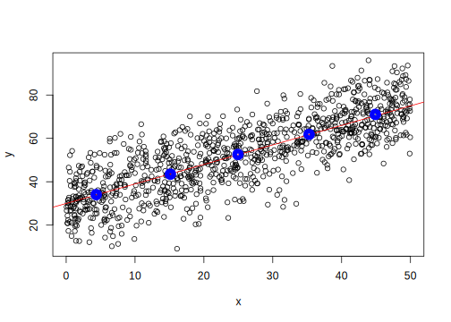

Chapter 9 Basic Econometrics in R
When we look at practical data analytics in an economics context, it becomes quickly apparent that the vast majority of applied econometric research builds in one way or the other on linear regression, specifically on ordinary least squares (OLS). OLS is the bread-and-butter model in microeconometrics for a number of reasons: it is rather easy to understand, its results are straightforward to interpret, it comes with a number of very useful statistical properties, and it can easily be applied to a large variety of economic research questions. In this section, we get to know the very basic idea behind OLS by looking at it through the lens of formal math notation as well as through the lens of R code.
9.1 Statistical modelling
Before we turn to a specific data example, let us introduce a general notation for this type of econometric problems. Generally we denote the dependent variable as \(y_i\) and the explanatory variable as \(x_i\). All the rest that is not more specifically explained by explanatory variables (\(u_{i}\)) we call the ‘residuals’ or the ‘error term.’ Hence we can rewrite the problem with the more general notation as
\(y_{i}= \alpha + \beta x_{i} + u_{i}\).
The overarching goal of modern econometrics for such problems is usually to assess whether \(x\) has a causal effect on \(y\). A key aspect of such an interpretation is that \(u_{i}\) is unrelated to \(x_i\). That is, other unobservable factors might also play a role for \(y\) but they must not affect both \(y\) and \(x\). The great computer scientist Judea Pearl has introduced an intuitive approach for illustrating such problems of causality. In the left panel of the figure below, we illustrate the unfortunate case where we have a so-called ‘endogeneity’ problem, a situation in which other factors affect both \(x\) and \(y\).
Figure 9.1: Causal diagrams. On the left with an endogeneity issue (other factors affect both the dependent and the explanatory variable) and on the right without this endogeneity issue.
9.1.1 Illustration with pseudo-data
Let us now turn to an illustration of how we can estimate \(\beta\) under the assumption that \(u\) does not affect \(x\). In order to make this more general and easily accessible let us for the moment ignore the dataset above and generate simulated data for which this assumption certainly holds. The basic R installation provides a number of functions to easily generate vectors of pseudo-random numbers24 The great advantage of using simulated data and code to understand statistical models is that we have full control over what the actual relationship between variables is. We can then easily assess how well an estimation procedure for a parameter is by comparing the parameter estimate with its true value (something we never observe when working with real-life data).
First, we define the key parameters for the simulation. We choose the actual values of \(\alpha\) and \(\beta\), and set the number of observations \(N\).
alpha <- 30
beta <- 0.9
N <- 1000Now, we initiate a vector \(x\) of length \(N\) drawn from the uniform distribution (between 0 and 0.5). This will be our explanatory variable.
x <- runif(N, 0, 50)Next, we draw a vector of random errors (residuals) \(u\) (from a normal distribution with mean=0 and SD=0.05) and compute the corresponding values of the dependent variable \(y\). Since we impose that the actual relationship between the variables is exactly defined in our simple linear model, this computation is straightforward (\(y_{i}= \alpha + \beta x_{i} + u_{i}\)).
# draw the random errors (all the other factors also affecting y)
epsilon <- rnorm(N, sd=10)
# compute the dependent variable values
y <- alpha + beta*x + epsilonWe can illustrate how \(y\) changes when \(x\) increases by plotting the raw data as a scatter plot as well as the true relationship (function) as a line.
plot(x,y)
abline(a = alpha, b=beta, col="red")
We see that while individual observations can be way off the true values (the red line), ‘on average’ the observations seem to follow the true relationship between \(x\) and \(y\). We can have a closer look at this by computing the average observed \(y\)-values for different intervals along the \(x\)-axis.
# compute average y per x intervals
lower <- c(0,10,20,30,40)
upper <- c(lower[-1], 50)
n_intervals <- length(lower)
y_bars <- list()
length(y_bars) <- n_intervals
x_bars <- list()
length(x_bars) <- n_intervals
for (i in 1:n_intervals){
y_bars[i] <- mean(y[lower[i] <= x & x < upper[i]])
x_bars[i] <- mean(x[lower[i] <= x & x < upper[i]])
}
y_bars <- unlist(y_bars)
x_bars <- unlist(x_bars)
# add to plot
plot(x,y)
abline(a = alpha, b=beta, col="red")
points(x_bars, y_bars, col="blue", lwd=10)
Clearly, the average values are much closer to the real values. That is, we can ‘average out’ the \(u\) in order to get a good estimate for the effect of \(x\) on \(y\) (to get an estimate of \(\beta\)). With this understanding, we can now formalize how to compute \(\beta\) (or, to be more precise, an estimate of it: \(\hat{\beta}\)). For simplicity, we take \(\alpha=30\) as given.
In a first step we take the averages of both sides of our initial regression equation:
\(\frac{1}{N}\sum{y_i}=\frac{1}{N}\sum{(30 + \beta x_{i} + u_{i})}\),
rearranging and using the common ‘bar’-notation for means, we get
\(\bar{y}=30+\beta\bar{x} + \bar{u}\),
and solving for \(\beta\) and some rearranging then yields
\(\beta=\frac{\bar{y}-30-\bar{u}}{\bar{x}}\).
While the elements in \(\bar{u}\) are unobservable, we can use the rest to compute an estimate of \(\beta\):
\(\hat{\beta}=\frac{\bar{y}-30}{\bar{x}}\).
(mean(y) -30)/mean(x)## [1] 0.90769.2 Estimation and Application
Now that we have a basic understanding of the simple linear model, let us use this model to investigate an empirical research question based on real data. By so doing, we will take an alternative perspective to compute an estimation of the parameters of interest. The example builds on the `swiss’ dataset encountered in previous lectures. First, get again familiar with the dataset:
# load the data
data(swiss)
# look at the description
?swissRecall that observations in this dataset are at the province level. We make use of the simple linear model to better understand whether more years of schooling is improving educational outcomes. Thereby, we approximate educational attainment with the variable Education (the percentage of Swiss military draftees in a province that had education beyond primary school) and educational outcomes with the variable Examination (the percentage of draftees in a province that have received the highest mark on the standardized test as part of the army examination). We thus want to exploit that schooling systematically varies between provinces but that all military draftees need to take the same standardized examination during the military drafting process.
9.2.1 Model specification
Formally, we can express the relationship between these variables as
\(Examination_{i}= \alpha + \beta Education_{i}\),
where the parameters \(\alpha\) and \(\beta\) determine the percentage of draftees in a province that have received the highest mark and the subscript \(i\) indicates that we model this relationship for each province \(i\) out of the \(N\) provinces (note that this also presupposes that \(\alpha\) and \(\beta\) are the same in each province). The intuitive hypothesis is that in this equation, \(\beta\) is positive, indicating that a higher share of draftees with more years of schooling results in a higher share of draftees who reach the highest examination mark.
Yet, our model has arguably a couple of weaknesses. Most importantly, from an economic point of view, it seems rather unlikely that \(Education\) is the only variable that matters for examination success. For example, it might matter a lot how students allocate their time when not in school, which might vary by province. In some provinces children and young adults might have generally engaged in work activities that foster their reading and math skills outside of school, while in other provinces they might have engaged in hard manual labor in the agricultural sector. To formally acknowledge that other factors might also play a role, we extend our model with the term \(u_{i}\). For the moment, we thus subsume all other potentially relevant factors in that term:
\(Examination_{i}= \alpha + \beta Education_{i} + u_{i}\).
9.2.2 Raw data
First, let’s look at how these two variables are jointly distributed with a scatter plot.
plot(swiss$Education, swiss$Examination)Clearly, there seems to be a positive relationship between the years of schooling and examination success. Considering the raw data, we can formulate the problem of estimating the parameters of interest (\(\alpha\) and \(\beta\)) as the question: What is the best way to draw a straight trend-line through the cloud of dots? To further specify the problem, we need to specify a criterion to judge whether such a line ‘fits’ the data well. A rather intuitive measure is the sum of the squared differences between the line and the actual data points on the \(y\)-axis. That is, we compare what \(y\)-value we would get for a given \(x\)-value according to our trend-line (i.e., the function defining this line) with the actual \(y\)-value in the data (for simplicity, we use the general formulation with \(y\) as the dependent and \(x\) as the explanatory variable).
9.3 Derivation and implementation of OLS estimator
From the model equation we easily see that these ‘differences’ between the predicted and the actual values of \(y\) are the remaining unexplained component \(u\):
\(y_{i}-\hat{\alpha}-\hat{\beta} x_i=u_i\).
Hence, we want to minimize the sum of squared residuals (SSR): \(\sum{u_i^2}=\sum{(y_{i}-\hat{\alpha}-\hat{\beta} x_i)^2}\). Using calculus, we define the two first order conditions:
\[\frac{\partial SSR}{\partial \hat{\alpha}}=\sum{-2(y_{i}-\hat{\alpha}-\hat{\beta} x_i)}=0\]
\[\frac{\partial SSR}{\partial \hat{\beta}}=\sum{-2x_i(y_{i}-\hat{\alpha}-\hat{\beta} x_i)}=0\]
The first condition is relatively easily solved by getting rid of the \(-2\) and considering that \(\sum{y_i}=N\bar{y}\):
\(\hat{\alpha}=\bar{y}-\hat{\beta}\bar{x}\).
By plugging the solution for \(\hat{\alpha}\) into the first order condition regarding \(\hat{\beta}\) and again considering that \(\sum{y_i}=N\bar{y}\), we get the solution for the slope coefficient estimator:
\(\frac{\sum{x_{i}y_{i}}-N\bar{y}\bar{x}}{\sum{x_i^2}-N\bar{x}^2}\).
To compute the actual estimates, we first compute \(\hat{\beta}\) and then \(\hat{\alpha}\). With all that, we can implement our OLS estimator for the simple linear regression model in R and apply it to the estimation problem at hand:
# implement the simple OLS estimator
# verify implementation with simulated data from above
# my_ols(y,x)
# should be very close to alpha=30 and beta=0.9
my_ols <-
function(y,x) {
N <- length(y)
betahat <- (sum(y*x) - N*mean(x)*mean(y)) / (sum(x^2)-N*mean(x)^2)
alphahat <- mean(y)-betahat*mean(x)
return(list(alpha=alphahat,beta=betahat))
}
# estimate effect of Education on Examination
estimates <- my_ols(swiss$Examination, swiss$Education)
estimates## $alpha
## [1] 10.13
##
## $beta
## [1] 0.5795Finally, we can visually inspect the estimated parameters (i.e., does the line fit well to the data?):
plot(swiss$Education, swiss$Examination)
abline(estimates$alpha, estimates$beta, col="red")The fit looks rather reasonable. There seems to be indeed a positive relationship between Education and Examination. In a next step, we would likely want to know whether we can say something meaningful about how precisely this relationship is measured statistically (i.e., how ‘significant’ \(\hat{\beta}\) is). We will leave this issue for another class.
9.3.1 Regression toolbox in R
When working on data analytics problems in R, there is usually no need to implement one’s own estimator functions. For most data analytics problems, the basic R installation (or an additional R package) already provide easy-to-use functions with many more features than our very simple example above. For example, the work-horse function for linear regressions in R is lm(), which accepts regression equation expressions as formulaes such as Examination~Education and a data-frame with the corresponding dataset as arguments. As a simple example, we use this function to compute the same regression estimates as before:
estimates2 <- lm(Examination~Education, data=swiss)
estimates2##
## Call:
## lm(formula = Examination ~ Education, data = swiss)
##
## Coefficients:
## (Intercept) Education
## 10.127 0.579With one additional line of code we can compute all the common statistics about the regression estimation:
summary(estimates2)##
## Call:
## lm(formula = Examination ~ Education, data = swiss)
##
## Residuals:
## Min 1Q Median 3Q Max
## -10.932 -4.763 -0.184 3.891 12.498
##
## Coefficients:
## Estimate Std. Error t value Pr(>|t|)
## (Intercept) 10.1275 1.2859 7.88 5.2e-10 ***
## Education 0.5795 0.0885 6.55 4.8e-08 ***
## ---
## Signif. codes:
## 0 '***' 0.001 '**' 0.01 '*' 0.05 '.' 0.1 ' ' 1
##
## Residual standard error: 5.77 on 45 degrees of freedom
## Multiple R-squared: 0.488, Adjusted R-squared: 0.476
## F-statistic: 42.9 on 1 and 45 DF, p-value: 4.81e-08The t-tests displayed in this summary for the intercept (\(\alpha\)) and the slope-coefficient concerning Education (\(\beta\)) assess how probable it is to observe such parameter estimates if the true values of these parameters are 0 (this is one way of thinking about statistical ‘significance’). Specifically for the research question in this example: How often would we observe a value of \(\hat{\beta}=0.579..\) or larger if we were to repeatedly draw a random sample from the same population and if more schooling in the population does actually not increase the average high-success rate at the standardized examination (\(\beta=0\))? The P-values (last column) suggest that this would hardly ever be the case. If we are confident that the factors not considered in this simple model do not affect Education, we could conclude that Education has a significant and positive effect on Examination.
Computers cannot actually ‘generate’ true random numbers. However, there are functions that produce series of numbers which have the properties of randomly drawn numbers from a given distribution.↩︎